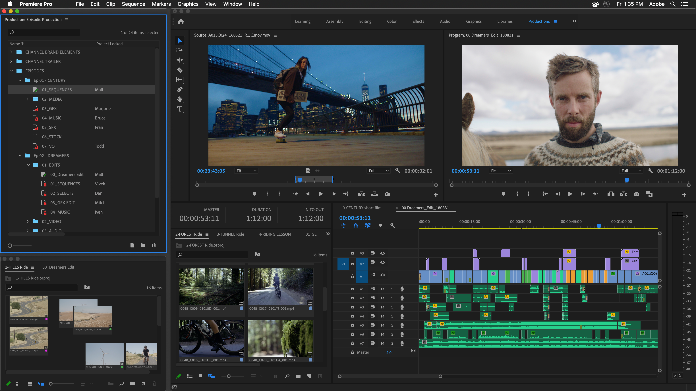
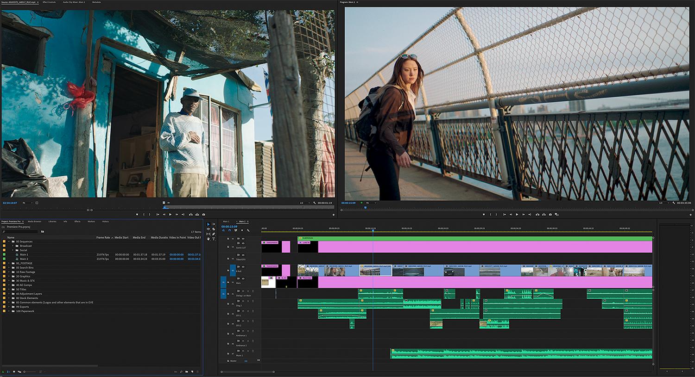
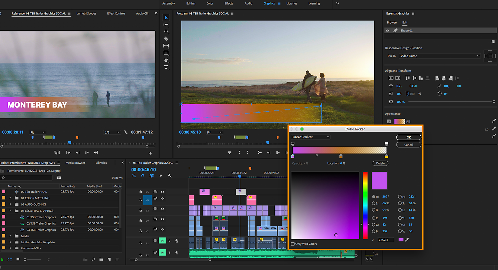
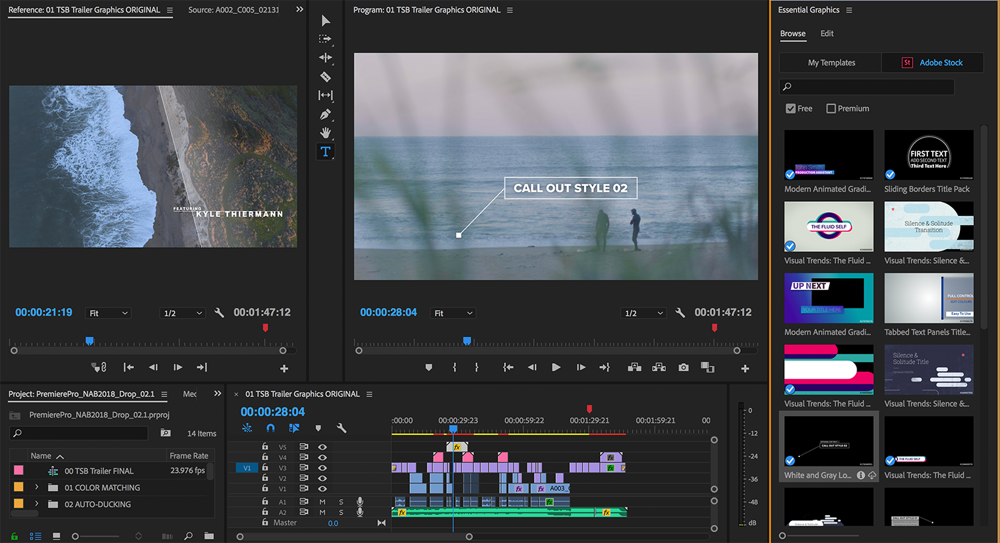

Premiere Pro CC는 영화, TV, 웹에 최적화된 동영상 편집 소프트웨어로,
크리에이티브 툴, 다른 Adobe
앱 및 서비스와의 통합, Adobe Sensei의 강력한 기능을 통해 원활한
워크플로우에서
푸티지를 세련된 영화나 동영상으로 만들 수 있습니다.

다양하고 효과적인 편집 기능



Premiere Pro는 Photoshop, After Effects, Adobe Audition,
Adobe Stock을 비롯한 다른 앱 및 서비스와 원활하게 연동됩니다. After
Effects에서 만든
모션 그래픽 템플릿을 열거나,Adobe Stock에서 모션 그래픽 템플릿을
사용자 정의하거나, 수백 개의 서드파티 확장 기능과 통합할 수 있습니다.